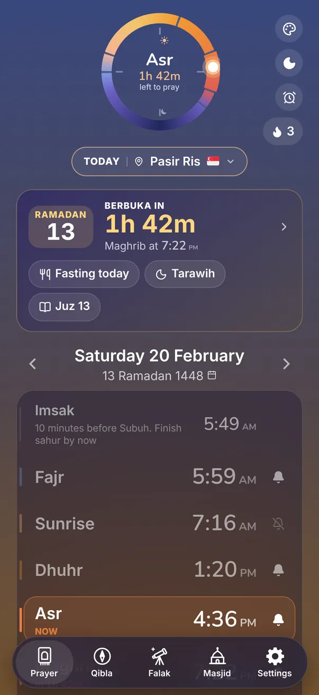
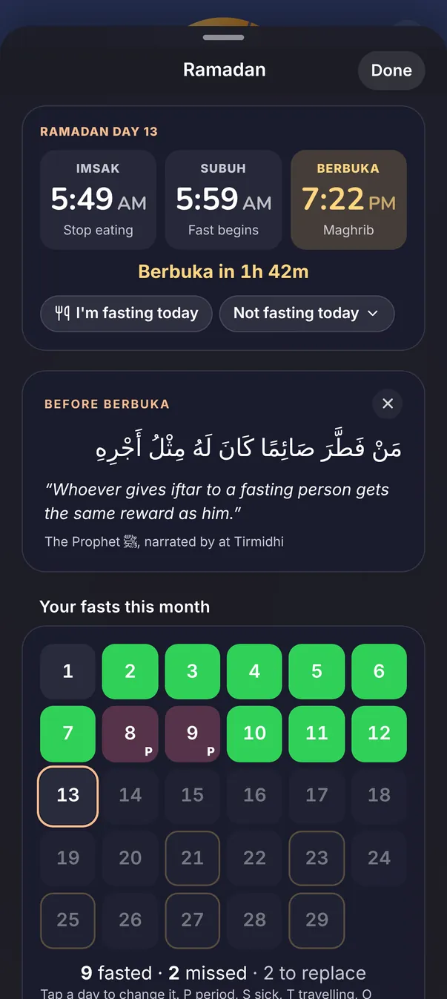
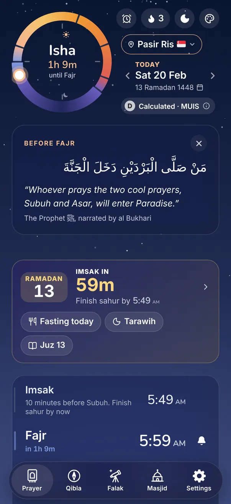
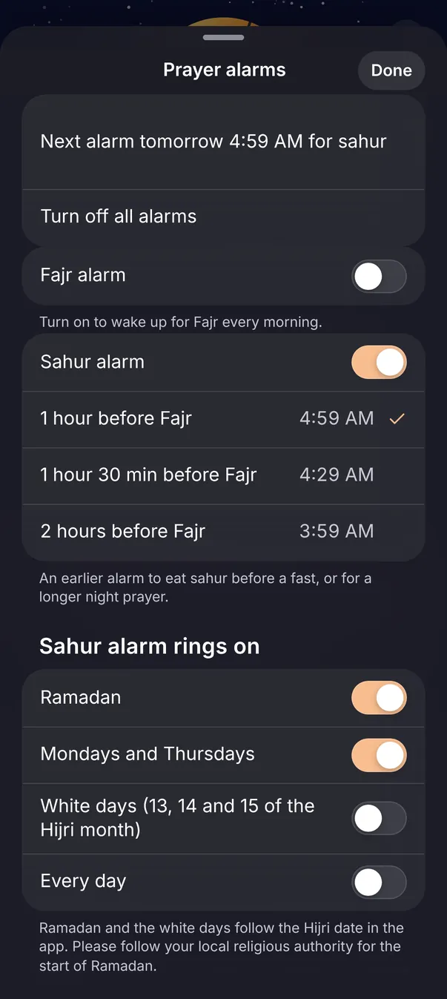
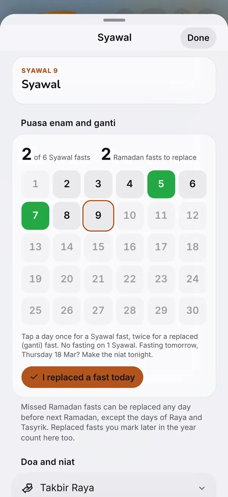
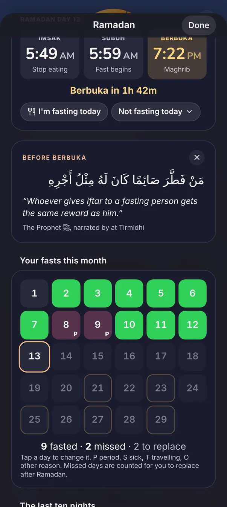

Ramadan made easier.
From the first sahur to the last day of Syawal, the app keeps the times that matter in front of you, so your heart can stay on the fast and the prayers.
Free, with no ads. Imsak and Berbuka follow the prayer times for where you are. For the start of Ramadan and Hari Raya, follow your local religious authority.
Know how long more to Berbuka
In Ramadan a card sits at the top of the Prayer screen. By day it counts down to Berbuka, and by night to Imsak.
- Today's Imsak, Subuh and Berbuka times together in one place
- The day of Ramadan, so you always know where you are in the month
- Tick off Tarawih each night after you pray
- An alert at Imsak and at Berbuka, if you want one


Wake up in time for sahur
Set a sahur alarm one hour, one and a half hours or two hours before Subuh. It keeps ringing until you stop it.
- Rings in Ramadan, and on Mondays and Thursdays or the white days if you fast them too
- Imsak shows ten minutes before Subuh, so you know when to stop eating
- The card counts down to Imsak while you eat


A simple record of your fasts
Tap a day to mark it. If you miss a day because of your period, illness or travel, the app counts it for you to replace later.
- See how many days you fasted and how many are left to replace
- After Hari Raya, mark your six days of Syawal and your replaced fasts on the same page
- Your record stays on your phone, and moves with you to a new phone


The whole month, start to end.
The moon sighting night
On the night of the sighting, the app tells you whose announcement it is waiting for. You can choose whose dates to follow.
The last ten nights
The odd nights are marked for you, with a gentle reminder at the last third of the night if you want one.
Hari Raya
A Raya morning card with the takbir, then Syawal for the rest of the month.
Print a timetable
A Ramadan timetable for your fridge, office or masjid notice board. Make one now.
On the masjid screen
The masjid screen adds Imsak and marks Maghrib as the time to break the fast, all month long.
Private, as always
No account and no tracking. Your fasts and your prayers are between you and Allah.
Get ready before Ramadan.
Set it up now, so the first sahur is easy. Times follow your local religious authority first.